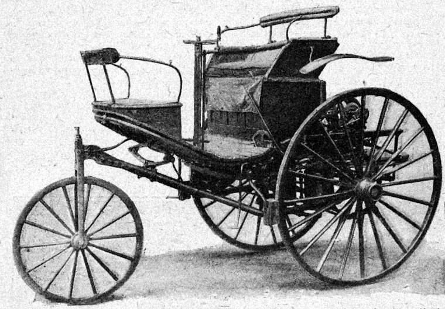

The Dawn of the Automobile & Bertha Benz's Historic Journey

On January 29, 1886, mechanical engineer Karl Benz filed patent application DRP 37435 at the Imperial Patent Office in Berlin for his "vehicle powered by a gas engine." This official document is widely regarded by historians and UNESCO as the official birth certificate of the automobile. The Benz Patent-Motorwagen was not merely a converted carriage; it was a bespoke, integrated three-wheeled vehicle powered by a horizontal, single-cylinder four-stroke engine delivering 0.75 horsepower at 400 rpm, equipped with an electric spark ignition and water evaporative cooling.
In August 1888, Karl's wife, Bertha Benz, cemented the automobile's commercial viability without her husband's prior knowledge. Taking their sons Eugen and Richard, she undertook the world's first long-distance automobile road trip—a grueling 106-kilometer (66-mile) journey from Mannheim to Pforzheim. Demonstrating peerless ingenuity, Bertha cleaned a clogged fuel line with her hatpin, insulated an exposed ignition wire using her garter, and purchased ligroin solvent from a pharmacy in Wiesloch (which became history's first filling station). Concurrently in Bad Cannstatt, Gottlieb Daimler and Wilhelm Maybach perfected the high-speed "Grandfather Clock" engine and installed it into a carriage, laying the dual foundations of what would unite as Mercedes-Benz.